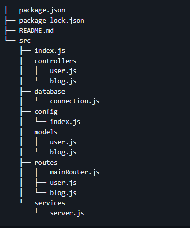
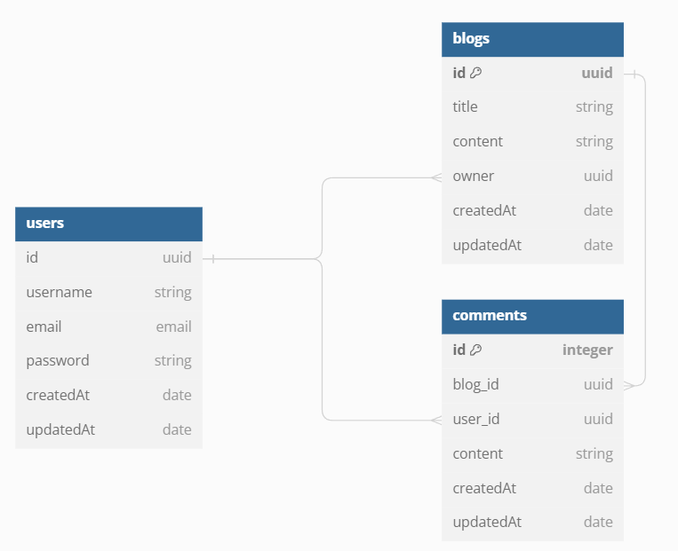

Documentación
Propósito
Sintetix es una web blog sobre tecnología y desarrollo de software donde los usuarios podrán leer noticias, subir sus propios artículos, tener un Hub de las tecnologias mas populares, centro de novedades y mas.
Funcionalidades
Un usuario que visita la página podrá:- Ver todos los blogs del sitio, para aprender sobre alguna herramienta o novedad del ambiente
- Registrarse y loguearse al sitio
- Estando logueado, crear sus propias entradas al blog para compartirlas con los demás usuarios
- Estando logueado, dar "me gusta" y/o comentar a blogs de otros usuarios
Herramientas de gestión
Para una mejor organización del sitio se hara uso de las siguientes herramientas:Frontend
Para el desarrollo del Frontend se hará uso de las siguientes tecnologías:
- React
- Vite
- Tailwindcss
El despliegue en producción se hará en Vercel
Enlace próximamente
Backend
Para el desarrollo del Backend se hará uso de las siguientes tecnologías:
- Node
- Express
- Sequelize
- PostgreSQL
- Cors
- Helmet
- Bcrypt
- Joi
- JsonWebToken
- Cookie-Parser
Se hará uso de la arquitectura MVC definiedo módulos que funcionan por separado. siguiendo la siguiente estructura de carpetas:
Para la conexión con la base de datos se usará el ORM Sequelize, siguiendo el siguiente diagrama de tablas:
Con la librería Joi, validamos la información recibida en cada request. Evitando entradas que impliquen un riesgo. Además con está librería se comprueba que el email tenga un formato válido (texto@texto.com/net) y la password recibida contenga:
- Al menos una letra minúscula.
- Al menos una letra mayúscula.
- Al menos un número.
- longitud total de la cadena debe estar entre 8 y 30 caracteres.
Con la librería Bcrypt encriptamos la password al momento de guardarse en la base de datos.
Las siguientes dos medidas de seguridad para el servidor son las librerías Cors que permite definir el cliente que puede hacer uso del servidor (Configurarse una vez tengamos la url de nuestro frontend). Y Helmet que se encarga de ocultar información que express por defecto comparte al momento de responder a una petición.
La autenticaciónde usuarios la hacemos seteando una cookie con Cookie-Parser donde almacena un token creado con JsonWebToken
El despliegue del servidor en producción se hará en (por definir)
Enlace próximamente
El despliegue de la base de datos en producción se hará en (por definir)
Enlace próximamente
Por definir
- Subir imagenes (cloudinary)
- Integrar google analytics
- Formato de blog, host de imagenes?
- Proximas funcionalidades
- testing
- documentación
- Servicio de hosting de server y db postgres